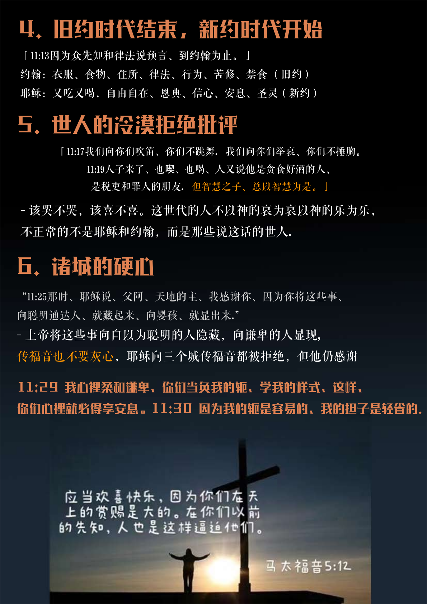

记录：宥均
经文图片：念恩
排版：爱宝
“11:25那时、耶稣说、父阿、天地的主、我感谢你、因为你将这些事、
向聪明通达人、就藏起来、向婴孩、就显出来.”
- 上帝将这些事向自以为聪明的人隐藏，向谦卑的人显现,
传福音也不要灰心，耶稣向三个城传福音都被拒绝，但他仍感谢
- 该哭不哭，该喜不喜。这世代的人不以神的哀为哀以神的乐为乐，
不正常的不是耶稣和约翰，而是那些说这话的世人.
5. 世人的冷漠拒绝批评
6. 诸城的硬心
「11:17我们向你们吹笛、你们不跳舞．我们向你们举哀、你们不捶胸。
11:19人子来了、也喫、也喝、人又说他是贪食好酒的人、
是税吏和罪人的朋友．但智慧之子、总以智慧为是。」
4. 旧约时代结束，新约时代开始
「11:13因为众先知和律法说预言、到约翰为止。」
约翰：衣服、食物、住所、律法、行为、苦修、禁食 （旧约）
耶稣：又吃又喝，自由自在、恩典、信心、安息、圣灵（新约）
11:29 我心裡柔和谦卑、你们当负我的轭、学我的样式、这样、
你们心裡就必得享安息。11:30 因为我的轭是容易的、我的担子是轻省的.